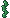
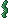
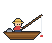

방치 낚시
0
0마리
초당 0 골드



낚싯대를 던졌어요...
🗼 무한의 탑
최고 0층 · 수입 +0%
🚩 다음 시작 1층
최고 0층 · 수입 +0%
🚩 다음 시작 1층
상점
환생
보유 진주 0개 · 환생 0회
📖 도감 보너스: 물고기 가격 +0% (1종당 +5%)
0
0마리
초당 0 골드



낚싯대를 던졌어요...
보유 진주 0개 · 환생 0회
📖 도감 보너스: 물고기 가격 +0% (1종당 +5%)